Ⅰ. 受講理由など
Q1. この授業を受講した理由は何ですか？（複数選択可）
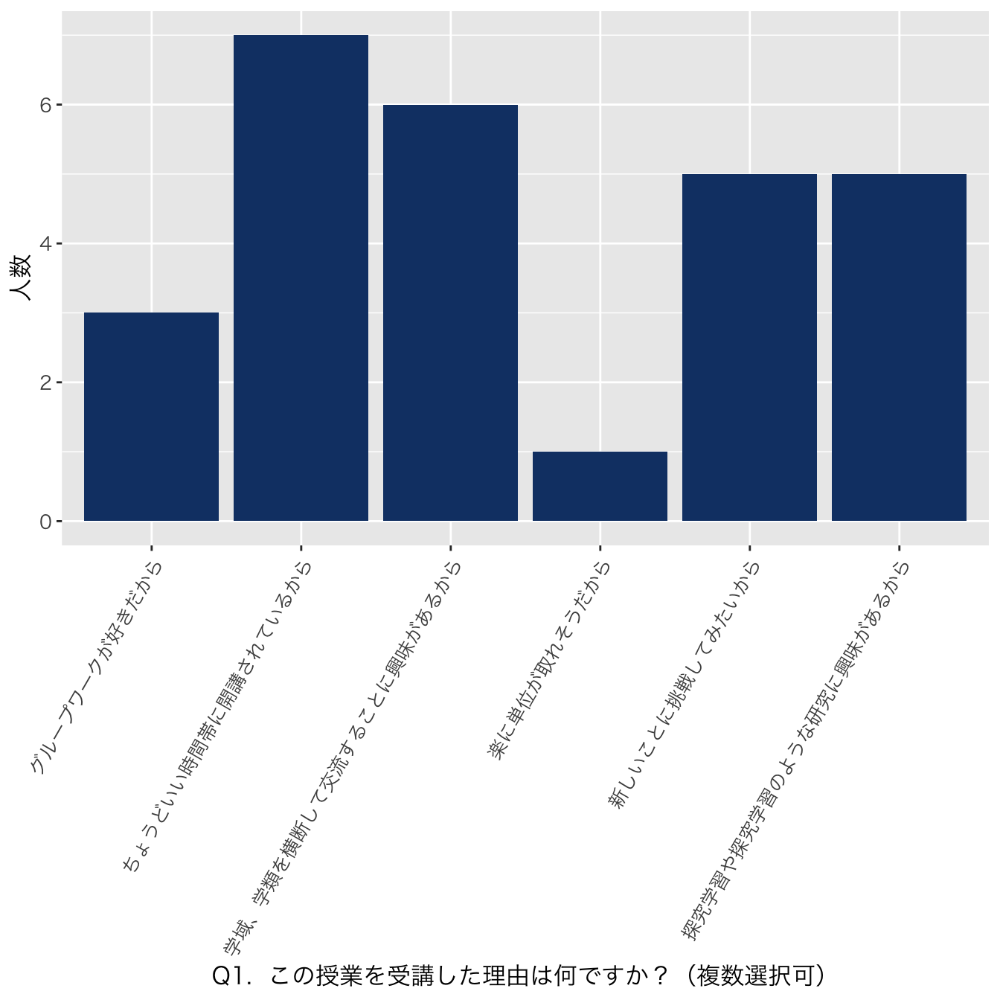
Q2. この授業に望むことは何ですか？
| Q2. この授業に望むことは何ですか？ |
|---|
| レポート、プレゼン能力をつけたい。 |
| 大学の学び方への基礎となるスキルの習得 |
| レポート、パワーポイントの大学生らしい使い方をしっかり学べること。 |
| 異なる価値観のもとで問題を話し合えること |
| 他の学類の方々と協力することで様々な視点から物事を見ることが出来るといいなと思う。 |
| 高校で行っていた探究活動などの授業もとても好きだったので、大学ではもっと発展的に、自分の力だけではなく様々な興味を持つ人たちと協力して、より深い探究活動を行えたらよいと思う。また、学域をこえてたくさんの人と関わるためのコミュニケーション能力も身につけていきたいと思う。 |
| 学域を超えたグループワークを通して、普段とは異なる視点からテーマを考察する意識を身に着け、また、大学での研究の行い方を身に着けたい。 |
| 大学の学びで必要なスキルを身につける中で、自分の学類だけではわからない様々な視点に触れること |
Q3. 高校での授業と大学での授業のどこが大きく違うと思いますか？
| Q3. 高校での授業と大学での授業のどこが大きく違うと思いますか？ |
|---|
| 授業に望む姿勢だもおもう。高校では受動的に受けていたが、大学では自分で好きな授業を受けるという積極的な部分があると思う。 |
| 自ら時間割を選択することと、単位制があるところ |
| 自分達で、主体的に動かないと学びが深まらない点。 |
| 授業はあくまでも起爆剤でしかないということ。受け身だと何も始まらないことを実感する。 |
| 大学での授業は、グループワークや意見を言う場面が高校に比べて少なくなったと思う。 |
| 高校では、大まかにテーマが与えられていたり、かなり先生の補助もあったけど、大学ではテーマは完全に自分たちで決めなければならないし、主体的に行動していかなければ良い結果にはたどりつかないと思うので、その点は大きく異なる点だと思う。 |
| 高校の授業はあらかじめ決められた答えにたどり着くための受動的なものであるのに対して、大学の授業は、答えがわからない事象を見つけ、自分からテーマ設定して研究するものだという点で異なると思う。 |
| 高校ではある程度テーマの枠が指定されていたが、大学では始めから自分たち自身でテーマを設定して進めて行くことが求められること |
Ⅱ.探究学習
Q4. 高校時代に探究学習に取り組みましたか？
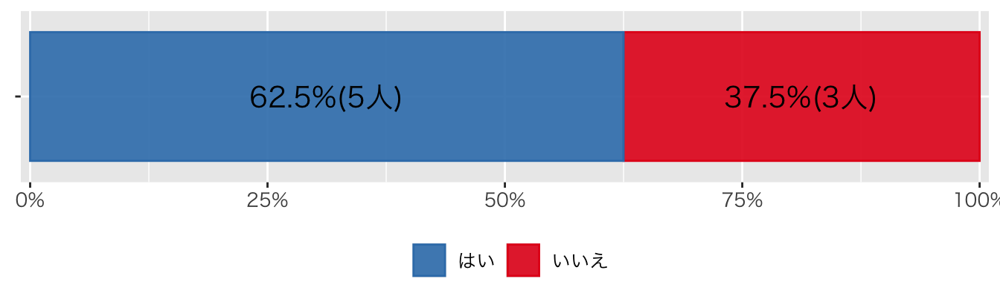
Q5. ご自身の探究学習への取り組みの熱心度を自己評価してください。
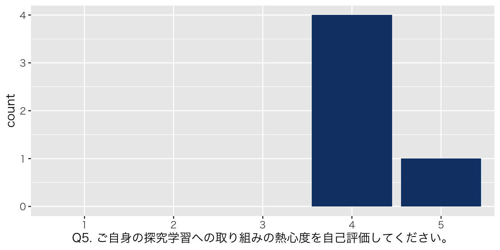
Q6. 探究学習は楽しかったですか？
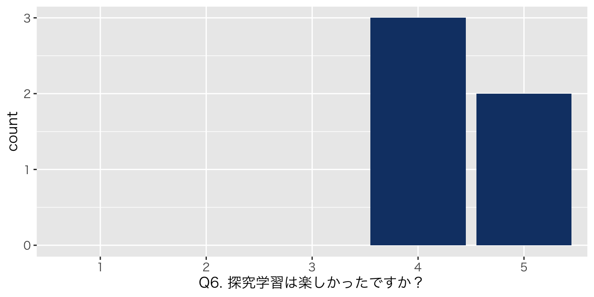
Q7. 研究テーマを教えてください。
| Q7. 研究テーマを教えてください。 |
|---|
| 水切りの最適入射角みたいな感じでした |
| トイレの便器に使われているように、カタツムリの殻が本当に1番汚れに強いのか |
| グルテンフリーのお菓子もグルテンを含むものと同様のものが作れるのか |
| 最も滞空時間の長い竹とんぼの条件 |
| 地元のバス利用を高めるために |
Q8. 探究学習をやってよかったと思うことは何ですか。
| Q8.探究学習をやってよかったと思うことは何ですか。 |
|---|
| 自分たちで仮説を立てること |
| 自分たちで案を出して、修正して、と互いに協力してより良い探究を作り上げていくのが楽しかった。 |
| 仲間たちと協力して一つの課題に向かっていたので、たくさんコミュニケーションがとれたこと。 |
| グループワークのいい練習になった。また、大学の知識に一部触れることができて楽しかった。 |
| グループ内外のメンバーからアドバイスをもらいながら、課題の解決策を考えることができたこと |
Q9. 難しかったことを教えてください。
| Q9. 難しかったことを教えてください。 |
|---|
| 対照実験を行うこと |
| 意見の食い違いや、重要とすることの考えの違いが対立の原因となったこと。 |
| 他クラスの人との交流も多かったので、時間を合わせるのが大変だった。 |
| 竹とんぼを手動で飛ばすため、近似ができる試行回数の最小の設定や、一定の力で飛ばし続けないといけないこと。 |
| 予想される反論や問題点に対して、どのように説明を付け加えるかを考えること |
Ⅲ. 到達目標にかかわる自己評価
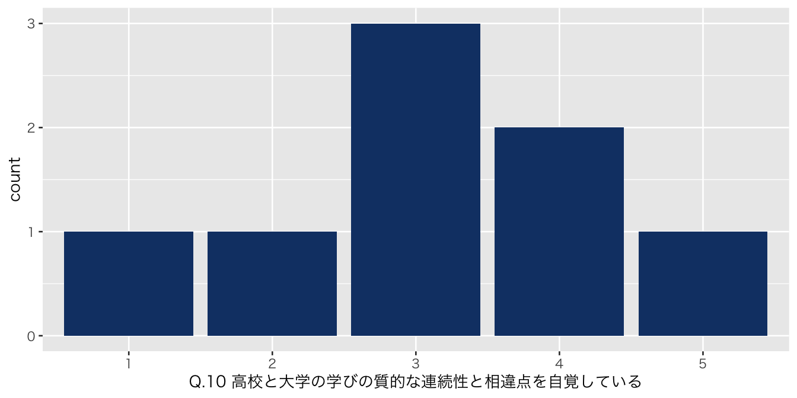
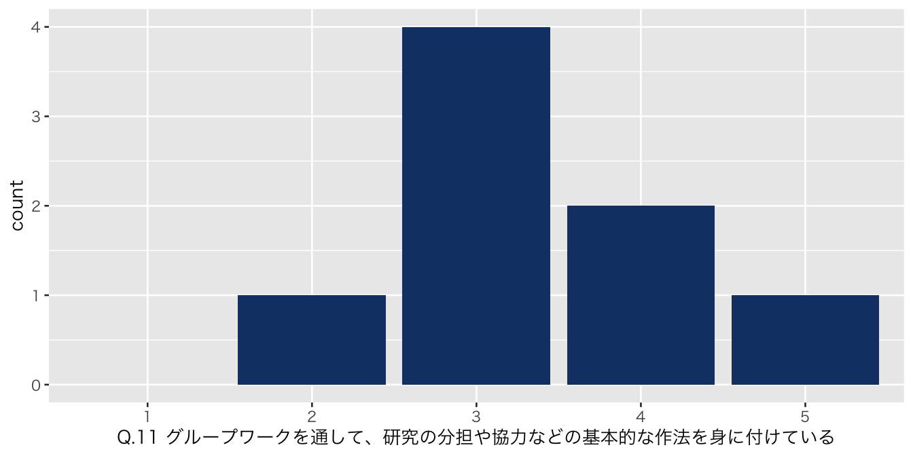
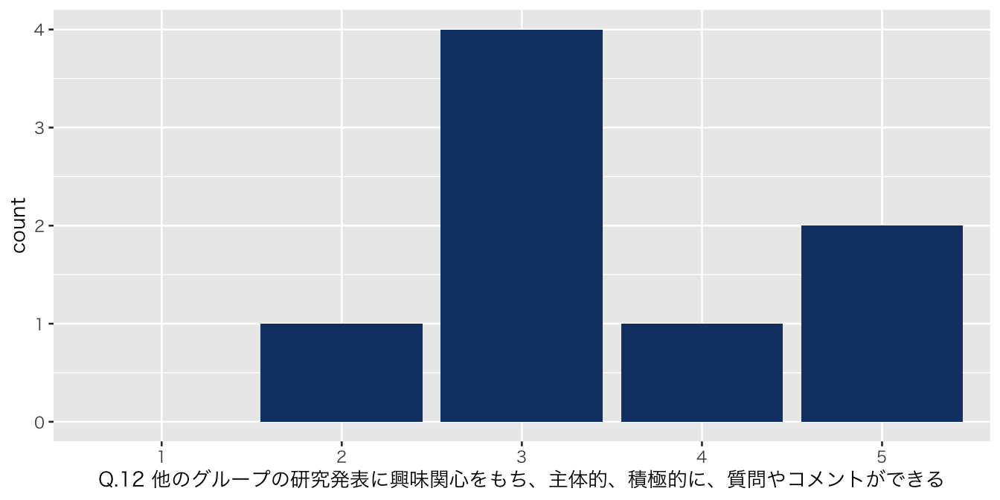
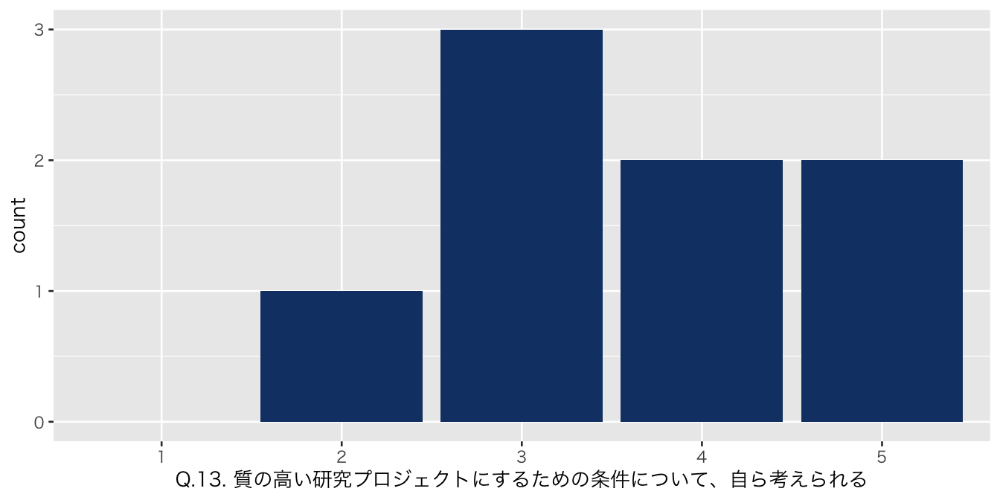
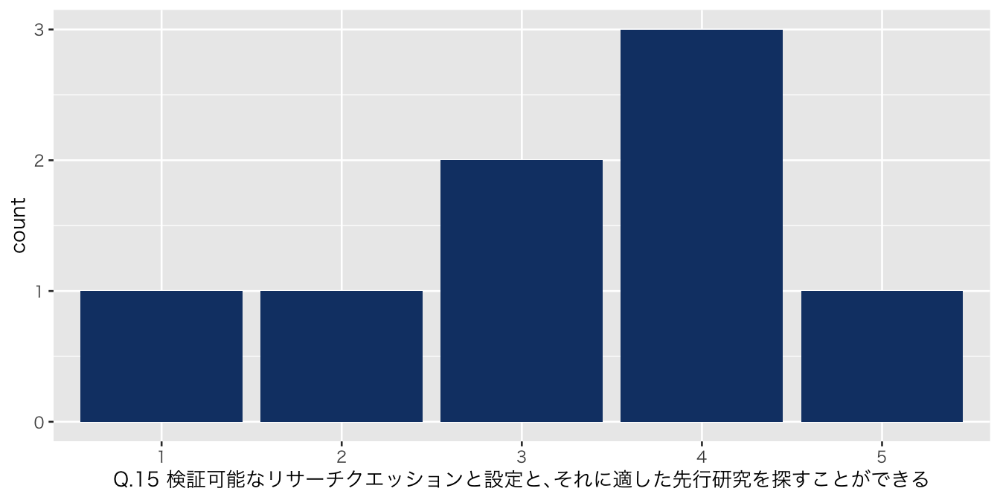
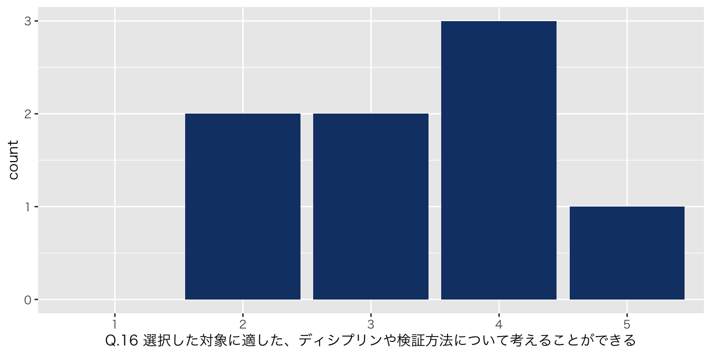
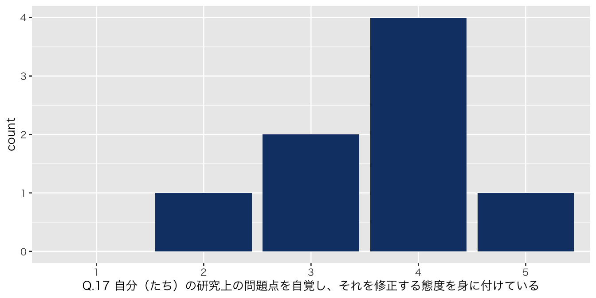
Copyright
2024 金沢大学 高大接続コア・センター